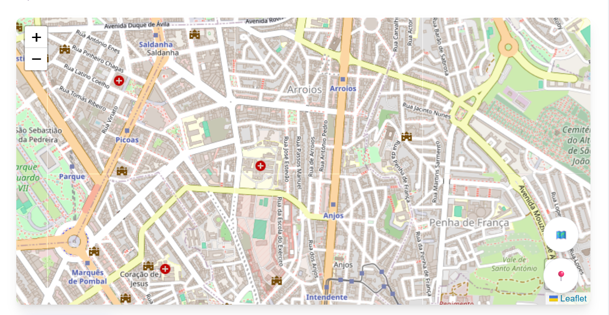

TukTuk em Tempo Real
Acompanhe a localização do nosso TukTuk
Acompanhe a localização do nosso TukTuk
Nesta pagina, poderá acompanhar em tempo real a sua localização e a posição de todos os nossos TukTuks no mapa.
Verifica facilmente se cada veiculo esta disponível ou ocupado e consulta o tempo estimado de chegada ate si.
O cliente pode escolher o seu TukTuk mais perto de si e chamar o tuktuk de imediato!

Clique em "Localize-me" para ver a sua posição no mapa
O ícone do TukTuk mostra a localização atual em tempo real
O estado indica se o TukTuk está disponível ou ocupado
A distância e o tempo estimado são calculados automaticamente
Use "Faça a sua reserva aqui!" para reservar o serviço
"Centrar mapa" ajusta a vista para melhor visualização
Se não vir o TukTuk, ele pode estar offline
Telefone: 96123456
WhatsApp: Disponivel no site principal
Email: carlosbarradas1@gmail.com
Veja os TukTuks no mapa em tempo real.
Mostra a sua posição atual e ajusta a vista no mapa.
Verifique disponibilidade e reserve o serviço rapidamente.
Telefone, WhatsApp e email para apoio imediato.